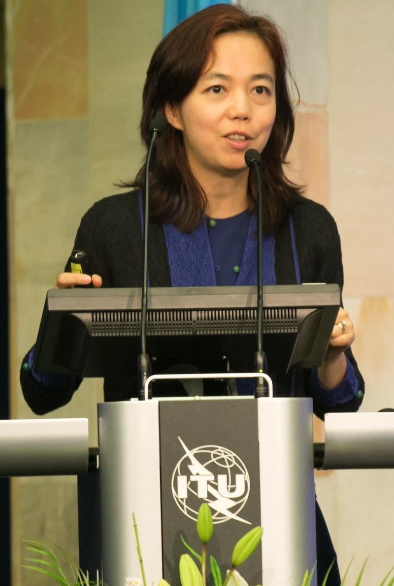

Fei-Fei Li é uma cientista chinesa e professora na Universidade
Stanford.
Na universidade, ela é co-diretora de institutos de pesquisa
sobre inteligência artificial, aprendizado de máquina, deep
learning, visão computacional e neurociência cognitiva.
Li é uma das principais pesquisadoras no ramo de inteligência
articial, tendo liderado a iniciativa ImageNet, um grande
conjunto de dados de visão computacional.
É uma das 100 Mulheres da lista da BBC de 2019.
A Dra. Fei-Fei Li é a primeira Professora Sequoia do
Departamento de Ciência da Computação da Universidade de
Stanford e cofundadora e codiretora do Instituto de IA Centrada
no Ser Humano de Stanford.
Ela atuou como Diretora do Laboratório de IA de Stanford de 2013
a 2018.
Durante seu período sabático em Stanford, de janeiro de 2017 a
setembro de 2018, a Dra. Li foi Vice-Presidente do Google e
Cientista-Chefe de IA/ML do Google Cloud.

A Dra. Li atuou como membro do conselho ou consultora em
diversas empresas públicas e privadas.
Atualmente, é cofundadora e CEO da World Labs, uma empresa de IA
focada em Inteligência Espacial e IA generativa.
A Dra. Li tem trabalhado com formuladores de políticas em âmbito
nacional e local para garantir um progresso positivo e centrado
no ser humano nas tecnologias de IA, incluindo diversos
depoimentos no Senado e no Congresso dos EUA, sua atuação como
assessora especial do Secretário-Geral das Nações Unidas, sua
participação na Comissão do Futuro do Trabalho da Califórnia
para o Governador da Califórnia em 2019-2020 e sua participação
na Força-Tarefa Nacional de Recursos de Pesquisa em Inteligência
Artificial (NAIRR) para o Escritório de Política Científica e
Tecnológica da Casa Branca (OSTP) e a Fundação Nacional de
Ciência (NSF) em 2021-2022. Ela proferiu inúmeros discursos,
inclusive para o Presidente dos Estados Unidos e para o Conselho
de Segurança das Nações Unidas.